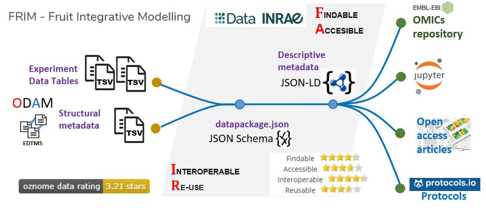

Publish your dataset according to FAIR principles¶
No question sharing data has benefits for a scientific career1. But more specifically the main reasons for publishing your data in a long-term repository are :
- fulfill a journal requirement to publish data
- facilitate citing your dataset by assigning a permanent uniquely identifiable code (DOI)
- improve discovery of and access to your dataset for others
- enable versioning of your data
- enable re-use and greater visibility of your work
Most of these reasons coincide with the FAIR principles. But publishing data according to the FAIR principles involves much more, especially well-described, accessible data that complies with community standards2. The FAIR principles can be seen as a consolidation of good data management practices to extend management with the notion of machine-driven data reuse. In others words, the FAIR principles define the attributes that data must have to enable and enhance its reuse, by humans and machines. It is recommended that structural metadata (e.g. links between data tables) should also be provided along with unambiguous definitions of all internal elements (e.g. column definitions, units of measurement), through links to accessible (standard) definitions3. This is precisely what is targeted in the implementation of data management by the ODAM software suite.
Therefore, not only descriptive but also structural metadata should be provided.
Descriptive metadata and Structural metadata¶
- Descriptive metadata
- is descriptive information about a resource. It is used for discovery and identification. It includes elements such as title, abstract, author, and keywords. They make it easier for both humans and machines to find them.
- Structural metadata
- is metadata about containers of data and indicates how compound objects are put together. It describes the types, versions, relationships and other characteristics of digital materials. They facilitate the reuse of data by providing structural metadata, thus avoiding that data consumers spend a disproportionate amount of time trying to understand the digital resources they need and devising specific ways to combine them.
Making data available online can be understood in different ways according to their nature and complexity, and the desired granularity. The simple approach is to deposit the data in flat files (generally a set of TSV/CSV files) in dedicated repositories, with only constraint to describe the data set as a whole with minimal metadata. But without structural metadata it is difficult if not impossible to understand the relationships between different data. Moreover, a dictionary describing each file (entity) as well as all the columns of the tables (attributes) offers a better guarantee in the correct (re)use of the data. Precisely, these last two points have been implemented in the ODAM software.
Unlike data sharing, which is simply making data available to a community, data publishing also requires that the data could be referenceable (i.e. a stable identification system) and contextualizable (i.e. the who and what). These points and many others are precisely what the FAIR principles seek to establish as a frame of reference.
Data publishing¶
Because ODAM is primarily an Experimental Data Table Management System (EDTMS) for data sharing, it must be associated with a suitable data repository in order to support data publishing. So the ODAM approach has to be regarded as complementary with publication of the data online within an institutional data repository as described in re3data.org (e.g. Data INRAE) associated or not with a scientific paper.
To be compliant with the FAIR principles, not all data, documents, workflows and other tools need to be located in a single system, but from a central repository, it is the set of links that constitutes the true information management system. It must be able to be traversed by a human being as well as by machines.
{kind=link}
Dataset information need to be linked but not necessary in the same repository
Use explicit schema for both data and metadata¶
To publish your data, preferably use a data repository that complies with the JSON-LD standard. Moreover, an ODAM datapackage.json file should be deposited in the repository, which will either contain absolute URLs if an ODAM repository for the data is used, or simply a relative reference to the files if the data are in the same repository. Thus, by relying on explicit schemas (JSON-LD, JSON Schema) for both metadata and data, it becomes possible to reuse the data without friction, both by humans and machines.
{kind=link}
Because, when disseminating data, defining an explicit schema for structural metadata along with unambiguous definitions of all internal elements (e.g. column definitions, units of measurement), through links to accessible (standard) definitions allows machines to better interpret the data for reuse. This will result in better annotated and more easily usable data that meets effortlessly the FAIR criteria for reusability. Indeed, concerning the FAIRification of data, this has a positive impact on the FAIR criteria 'Interoperable' and 'Reusable', encouraging structured data using a discoverable, community-endorsed schema or data model.
ODAM data FAIRification workflow¶
Exporting metadata in datapackage format offers a great flexibility of use data via scripting languages such as R and Python on the basis of existing packages. Furthermore, by linking data files from their URLs within the metadata, the metadata file formatted in this way can be distributed on its own while still allowing full exploitation of the data.
Besides, this type of format allows a great variety in the choice of data repository as a distinct separation is established between structural metadata described in the datapackage format on the one hand , and descriptive metadata depending on the type of repository on the other hand.
Preferably the chosen data repository should offer the ability to query and retrieve data using an API that conforms to the OpenAPI specification and that meet the essential criteria of the FAIR principles. For example, the following data repositories registered in re3data.org can be cited without being exhaustive: Dataverse, Dryad, FAIRDOMHub based on SEEK platform, FigShare, Zenodo. Among them, Dataverse and the SEEK platform can even be installed and configured as an institutional repository.
Based on an ODAM repository¶
Because ODAM is primarily an Experimental Data Table Management System (EDTMS) for data sharing, it must be associated with a suitable data repository in order to support data publishing.
Whereas institutional data repositories focus on the experiment description with the corresponding descriptive metadata, the ODAM approach, by adjoining some minimal but relevant structural metadata, gives access to the data themselves with the possibility to explore and mine them. While ODAM ensuring data sharing function allows direct access to subsets of data by Web API request, an institutional data repository ensuring data publishing function has to support an important part of the FAIR criteria. Thus, the combination of the two systems makes it possible to cover all the essential FAIR criteria.
One of the benefits of having an ODAM repository for data users is that it avoids the need to download data prior to any data analysis. This ensures that one starts from the data of the repository with help of the web API and not with the duplicate data that could have been changed between analyses without keeping track of it. In the same way, you can distribute your Jupiter notebooks, for example, without having to duplicate the data.
In order to make the data fair, and even if there is already a web API for data access, it makes sense to attach an ODAM datapackage.json file (see JSON schema) to the institutional data repository. This allows machines to use the data, since this datapackage file uses an explicit schema for the data and its organization. In this case, it is imperative to specify absolute URLs in the datapackage.json for the data files.
- You can get the datapackage.json file from the ODAM API as follows:
https://<your ODAM data reposity>/getdata/query/<your dataset>/datapackage?links=1
Example: Data INRAE repository as a hub
Based on Dataverse, Data INRAE repository allows to interconnect the different elements of the dataset. A file named 'datapackage.json', structured according to an explicit schema, was generated based on the structural metadata previously defined with the help of spreadsheets. By relying on explicit schemas (JSON-LD, JSON Schema) for both metadata and data, this makes it possible for both humans and machines to reuse data without friction..
{kind=link}

{kind=link}
Data INRAE repository as a hub (based on Dataverse)
Without ODAM repository¶
If you do not wish to set up your own ODAM repository on internet, you can at least simply upload your data files with associated structural metadata to an institutional repository. Add a ODAM datapackage.json file within your collection of data files with relative path for files. (see JSON schema).
- You can get the datapackage.json file from the ODAM API as follows:
http://<your local ODAM data reposity>/getdata/query/<your dataset>/datapackage
In addition, for easy reuse, simply indicate that the data has been formatted and structured to be compatible with the ODAM software, so that users of the data can take advantage of all associated services and tools by installing it on their desktop or laptop.
-
Gabriel Popkin (2019) Data sharing and how it can benefit your scientific career, Nature 569:445-447 https://www.nature.com/articles/d41586-019-01506-x ↩
-
Turning FAIR into reality: Final Report and Action Plan from the European Commission Expert Group on FAIR Data (2018) https://ec.europa.eu/info/publications/turning-fair-reality_en ↩
-
Annika Jacobsen et al (2020), FAIR Principles: Interpretations and Implementation Considerations, Data Intelligence 2020 2: 1-2, 10-29 https://doi.org/10.1162/dint_r_00024 ↩
-
Making the data FAIR, EU FAIRplus project https://fairplus-project.eu/making-fair/ ↩
-
Cost-Benefit analysis for FAIR research data - Cost of not having FAIR research data, European Commission, Directorate-General for Research and Innovation (2018) https://bit.ly/3dixEe1 ↩
-
Bangert, Daniel, Hermans, Emilie, van Horik, René, de Jong, Maaike, Koers, Hylke, & Mokrane, Mustapha. (2019, December 19). Recommendations for Services in a FAIR data ecosystem. Zenodo. http://doi.org/10.5281/zenodo.3585742 ↩
-
Deniz Beyan, Oya, Chue Hong, Neil, Cozzini, Stefano, Hoffman-Sommer, Marta, Hooft, Rob, Lembinen, Liisi, … Teperek, Marta. (2020, June 23). Seven Recommendations for Implementation of FAIR Practice. Zenodo. http://doi.org/10.5281/zenodo.3931993 ↩